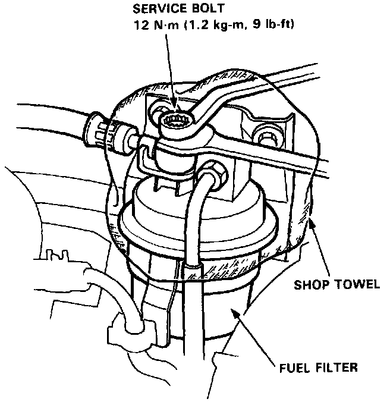

Fuel Pressure Release: Service and Repair

Relieving Fuel Pressure
WARNING:
- Do not smoke while working on the fuel system. Keep open flames or sparks away from the work area.
- Be sure to relieve fuel pressure while the engine is off.
NOTE: Before disconnecting fuel pipes or hoses, release pressure from the system by removing the gas cap then loosening the 6 mm service bolt at top of the fuel filter.
1. Remove the fuel tank filler cap.
2. Disconnect the battery negative cable from the battery negative terminal.
3. Use a box end wrench on the 6 mm service bolt at top of the fuel filter, while holding the special banjo bolt with another wrench.
4. Place a rag or shop towel over the 6 mm service bolt.
5. Slowly loosen the 6 mm service bolt one complete turn.
NOTE:
- A fuel pressure gauge can be attached at the 6 mm service bolt hole.
- Always replace the washer between the service bolt and the special banjo bolt, whenever the service bolt is loosened to relieve fuel pressure.
- Replace all washers whenever the bolts are removed to disassemble parts.